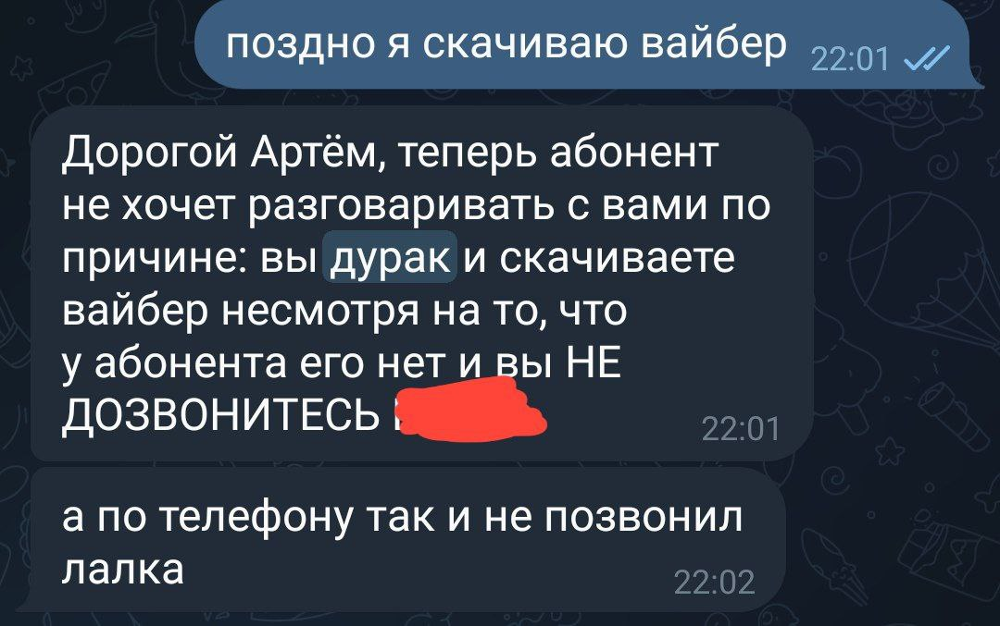

Зачем мне знать о ней?
Допустим, вы не знаете, кто такая Даша Плетюшкина, и не знаете, надо ли оно вам. Эта страница поможет вам понять, что всё-таки надо.

-
Даша может очень качественно дурачится
- Даша может найти всё что угодно в квартире, если её хорошо попросить
- Каждый первый говоривший по телефону с Дашей подтверждает, что это были их лучшие телефонные
разговоры в жизни. Конкретные отзывы:
- "Это был мой лучший разговор по телефону, я как будто переродился!"
- "Сначала я смотрел скептически на отзывы знакомых о разговаровах с ней, но когда это случилось, все сомнения развеялись"
- "Если у вас когда-нибудь будет возможность поговорить с ней по телефону и вы этого не сделаете, то окажетесь самыми большии дураками"
- Вы скучно проведёте день
- Вы не подурачитесь
- Вы не поговорите по телефону
Если вам недостаточно этого, то посмотрите на неё ещё раз
нажать